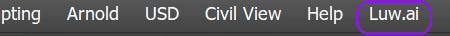
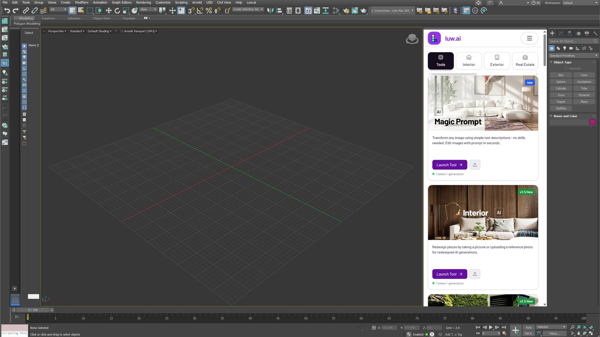
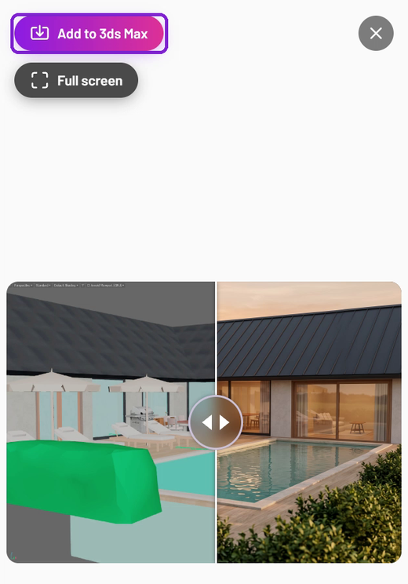
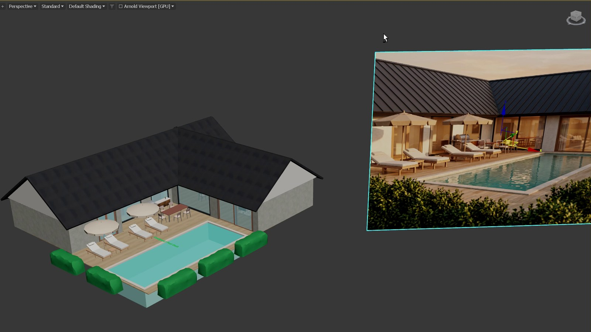
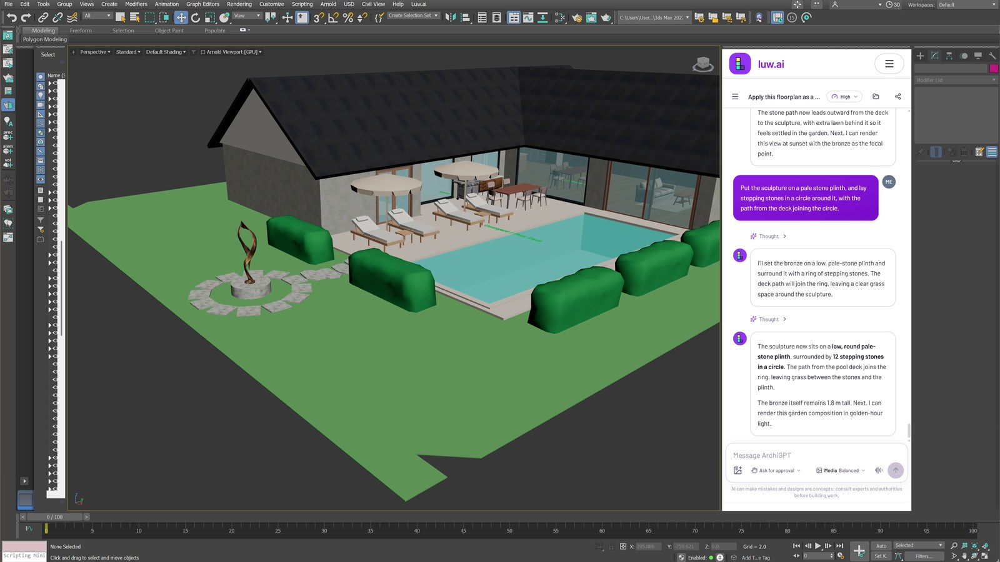
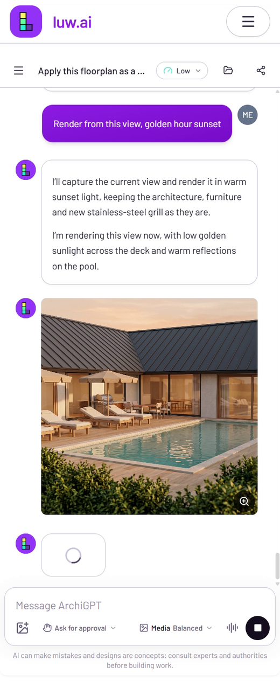

Luw.ai for 3ds Max
Design a building by talking to ArchiGPT and watch it appear in your 3ds Max scene. Then render it, right inside 3ds Max. No export, no extra app.
What you need
- 3ds Max 2024, 2025, 2026 or 2027 on Windows. Tested on 3ds Max 2027. The free trial works too.
- A Luw.ai account. Each render uses tokens from your account: 1 token for one image.
- An internet connection. The renders are made on Luw.ai's servers.
- Microsoft Edge WebView2 Runtime. Windows 10 and 11 usually have it already.
- The Luw.ai plug-in:
Luw.ai-3dsMax.zip. Download it here and unzip it into a folder.
Install the plug-in
- Close 3ds Max.
- In the unzipped folder, right-click
install.ps1and choose Run with PowerShell. It installs Luw.ai for your Windows user. - Open 3ds Max.
Open Luw.ai and sign in
Choose Luw.ai › Luw.ai in 3ds Max's menu bar.

The Luw.ai panel docks at the right of the viewports. It is the Luw.ai web app, made to work with 3ds Max. Choose the same menu item again to close it; it opens again where you left it.

Get your first render
-
Set up your view. Frame the active viewport until you like the picture. What you see is what Luw.ai renders.
Tip: a shaded viewport with colors or materials gives better renders than a wireframe one.
- Click Render AI on the panel's home page: your 3ds Max view is already in it. You don't need to save or export anything. Moved the camera? Click Capture 3ds Max view on the picture to take the new view.
- Choose options if you like: Time of Day, Lighting, or a short Prompt such as “golden hour, warm light on the deck”. Or leave them on Auto.
- Click Generate Image with AI. One image uses 1 token. Your render is ready in about a minute. Click it to open it.
-
Compare and keep it. Drag the slider to compare the render with your view, then click Add to 3ds Max at the top left.

-
That's it. The render is now in your scene as a picture on a plane beside the model, facing the camera. To remove it, press Ctrl+Z once.

Your model and its render, side by side in 3ds Max.
More tools
Open the menu (☰) at the top of the panel for more tools, such as interiors, exteriors, sketch to render and video. Most tools start with your 3ds Max view. With 3DGen AI you get a 3D model, and Add to 3ds Max brings it into your scene.
Design a building with ArchiGPT
ArchiGPT is Luw.ai's design assistant. In 3ds Max it builds what you describe straight into your scene, as ordinary 3ds Max objects on their own layers under Luw.ai, while you watch.
- Open ArchiGPT from the home page of the Luw.ai panel.
-
Say what you want. Describe the building, or attach a photo of a plan you drew on paper and write something like “Apply this floorplan as a villa.” ArchiGPT builds it in 3ds Max: walls, rooms, doors and windows, the kitchen, furniture, a pool.

The villa in 3ds Max, and the conversation that built it. - Change it by talking. “Give it a 35° gable roof”, “add a barbecue corner by the pool”, “lay out the sunbeds like this photo”. Only what changed is rebuilt. Select something in 3ds Max first and ArchiGPT knows what “this” means. It knows your own objects too: “move the box I made 2 m east”, “what else is in the scene?”
- Change it yourself, too. Move, turn, scale or delete what ArchiGPT built, or add objects of your own, whenever you like. Your changes stay when ArchiGPT builds again.
- Add materials. “Light oak floors, white plaster walls, a dark grey metal roof.” ArchiGPT puts real materials on the model, and can have Pattern AI make a texture just for it.
- Add what no library has. “A bronze sculpture by the pool.” ArchiGPT designs it, 3DGen AI makes it a real 3D model, and it lands in your scene.
-
Render it. Frame a view in 3ds Max and ask for a render, or ask ArchiGPT to go into every room and render each one in 4K. It shows what it will cost and waits for your Approve. Click a result to see it full size, or put it in your scene with Add to 3ds Max.

Help
- I don't see the Luw.ai menu.
- Choose Customize › Customize User Interface, pick the category Luw.ai and drag Luw.ai onto a toolbar or a menu.
- The panel is empty or doesn't load.
- Luw.ai needs the internet and the Microsoft Edge WebView2 Runtime. Check your connection, install the WebView2 Runtime if it is missing, then close the panel and open it again.
- The picture in the panel is an old view.
- Click Capture 3ds Max view on the picture.
- Something went wrong.
- Send us the file
%LOCALAPPDATA%\Luw.ai\logs\plugin.logand the lines starting with “Luw.ai” in the MAXScript Listener (F11). - How do I remove the plug-in?
- Close 3ds Max, then right-click
uninstall.ps1in the unzipped folder and choose Run with PowerShell.